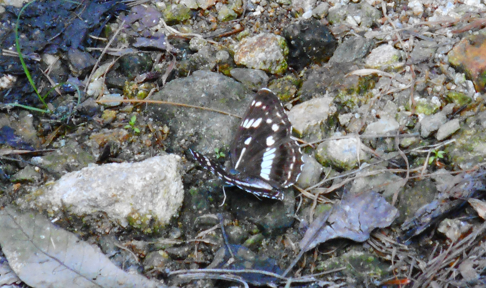
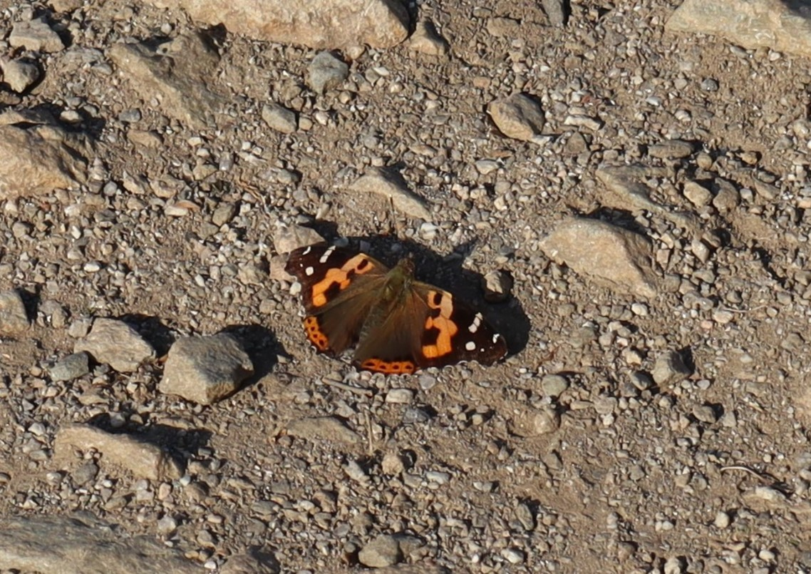
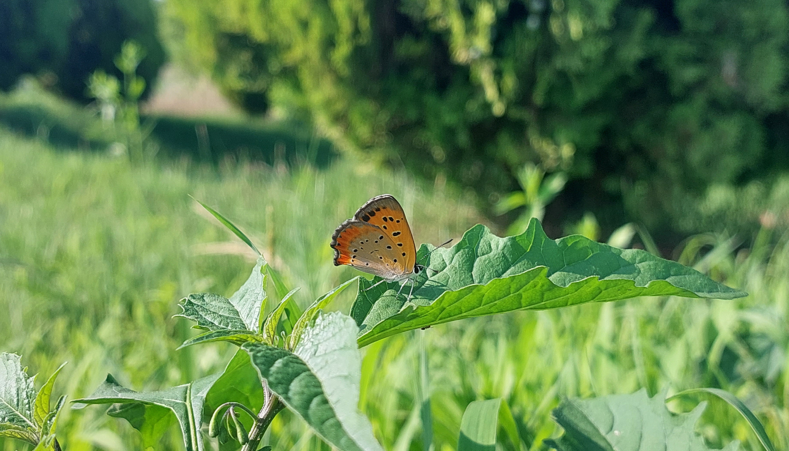

Agrotis tokionis (Butler, 1881)
2016. 10. 3. 경기도 용인시 처인구 남사면 숫검은밤나방
Ourapteryx koreana (Inoue, 1993)
2015. 9. 30. 충청남도 서산시 용현계곡 굵은줄제비가지나방
Agrotis tokionis (Butler, 1881)
2016. 10. 3. 경기도 용인시 처인구 남사면 숫검은밤나방
.jpg)
.jpg)
Kaniska canace (Linnaeus, 1763)
2017. 4. 13. 서울시 강동구 일자산 청띠신선나비

Aglaomorpha histrio (Walker, 1855)
2017. 8. 15. 강원도 원주시 치악산 흰무늬왕불나방

.jpg)
Argyreus hyperbius (Linnaeus, 1763)
2017. 10. 7. 경상남도 남해군 다랭이마을 암끝검은표범나비
2022. 8. 14. 경기도 하남시 미사호수공원

Parnara guttata (Bremer et Grey, 1852)
2017 .10. 7. 경상남도 남해군 다랭이마을 줄점팔랑나비

Neptis sappho (Pallas, 1771)
2018. 8. 5. 경기도 안성시 칠현산 애기세줄나비
.JPG)
.JPG)
Brahmaea certhia (Fabricius, 1793)
2018. 8. 6. 경기도 안성시 칠현산 왕물결나방
2018. 8. 8.

Papilio maackii Ménétriès, 1858
2019. 6. 6. 경기도 남양주시 수동면 산제비나비

Neptis alwina (Bremer et Grey, 1852)
2019. 6. 6. 경기도 남양주시 수동면 왕세줄나비

Kirinia epaminondas (Staudinger, 1887)
2020. 8. 17. 경기도 하남시 검단산 황알락그늘나비
.jpg)
Polygonia c-aureum (Linnaeus, 1758)
2021. 8. 28. 경기도 하남시 신장동 네발나비

Vanessa indica (Herbst, 1794)
2022. 5. 5. 경기도 하남시 검단산 큰멋쟁이나비

Drymonia dodonides (Staudinger, 1887)
2022. 5. 5. 경기도 하남시 검단산 점줄재주나방
Actias artemis (Bremer and grey, 1853)
2022. 7. 1. 전라북도 임실군 관촌면 긴꼬리산누에나방

Lycaena phlaeas (Linnaeus, 1761)
2022. 7. 2. 전라북도 임실군 관촌면 작은주홍부전나비

Pieris rapae (Linnaeus, 1758)
2022. 7. 2. 전라북도 임실군 관촌면 배추흰나비